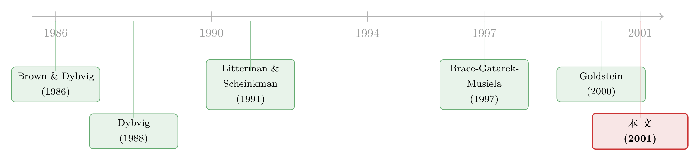

扔掉十亿美元：当你用错了一把尺子去决定『何时行权』
本文读的是 Longstaff, Santa-Clara & Schwartz (2001, Journal of Financial Economics)：当真实的利率曲线由多个因子驱动，而你却用一个单因子模型去决定美式互换期权 (swaption) 何时行权，哪怕你每天都把这个单因子模型重新校准到市场价上，它告诉你的行权时机仍然是次优的。每 $100 名义本金大约损失 10–30 美分；把它乘上整个 swaptions 市场的规模，被白白扔掉的钱「轻轻松松」就是几十亿美元。
1 引言：从「一百万」到「十亿」
1988 年，Phil Dybvig 写过一篇标题很刺眼的论文：Inefficient portfolio strategies or how to throw away a million dollars in the stock market（如何在股市里扔掉一百万美元）。他想说的是：哪怕资产定价是对的、市场是有效的，只要你的策略是次优的，你照样会把钱白白送出去——不是被骗走，而是被自己扔掉。
十三年后，Dybvig 的两位同行 Longstaff 和 Santa-Clara，连同 Schwartz，把这个故事从股市搬到了一个大得多的舞台，并且把标题里的「一百万」换成了「十亿」。
为什么是 swaptions？先看一组数字。到 1999 年底，利率互换 (interest rate swap) 的名义本金存量是 $43.9 trillion，差不多是当时全部美国国债存量 $5.8 trillion 的八倍。而进入或取消这些互换的期权——也就是 互换期权 (swaption)——名义本金约 $4.6 trillion，把芝加哥期货交易所所有国债期货期权（合计 $15 billion）远远甩在身后。更要命的是，行业里超过 50% 的新发机构债和公司债，一发行就被「换」成了浮动或固定，而发债人往往要保留将来取消这笔互换的权利。于是 swaption 成了公司融资里一个绕不开的工具，而且因为债务期限动辄几十年，它们常常是可以在很多个未来日期行权的美式 (American-style) 期权。
接着，一个自然的问题是：这么重要的东西，业界是怎么给它定价、对冲、决定行权的？
答案里藏着一道巨大的裂缝。学术界早有汗牛充栋的证据说：利率曲线是由多个因子驱动的（Litterman & Scheinkman, 1991 把它们概括为「水平、斜率、曲率」三因子）。可与此同时，华尔街的很多机构在给美式 swaption 定价和行权时，用的却是简单的单因子 (single-factor) 模型。
这就是本文的张力所在：如果世界其实是多因子的，而你拿着一把单因子的尺子去量「现在该不该行权」，你会犯错吗？错多少？
2 先把舞台搭好：什么是 swaption
一个 swaption 的标的是一笔利率互换。在标准互换里，一方收固定年金、付浮动（挂钩三个月 Libor），两方分别叫「收固定」和「付固定」。
记 \(D(t,N)\) 为 \(t\) 时刻、到期日为 \(N\) 的贴现债券价格。对一笔起始日为 \(\tau\)、到期日为 \(T\)、固定票息为 \(c\) 的远期互换，论文给出收固定方在 \(t\) 时刻的价值（式 2）：
$$V(t,\tau,T,c) = \frac{c}{2}\sum_{i=1}^{2(T-\tau)} D(t,\tau+i/2) + D(t,T) - D(t,\tau)$$
注意右边只是一组零息债券价格的线性组合——前两项是固定腿，最后一项是起始日值 par 的浮动腿。一个「\(\tau\) into \(T-\tau\) 收固定方 swaption」的到期收益就是 \(\max(0,\,V(t,\tau,T,c))\)，本质上是一份写在息票债券上的看涨期权，执行价为浮动腿的面值 $1。
而本文真正关心的，是最常见的美式结构——所谓 \(T\) noncall \(t\)：持有人可以在 \(t,\,t+0.5,\,t+1.0,\,\dots,\,T-0.5\) 这一连串票息日里的任意一天进场。这种「离散行权」的期权，业界也叫 百慕大互换期权 (Bermuda swaption)。它和传统美式期权一样，价值不低于对应的欧式期权，核心难点在于一个最优停时 (optimal stopping) 问题：每到一个行权日，你都要回答「现在行权，还是再等等？」
而要回答这个问题，你必须知道利率曲线接下来会怎么动。于是问题就回到了第 1 节那道裂缝：曲线的动态，到底是几个因子？
3 核心张力：单因子模型错在哪
为什么单因子模型在「定价」上看起来还能用、在「行权」上却会出事？
先说清楚单因子模型的隐含假设。无论它被校准得多漂亮，单因子模型都意味着：整条利率曲线上的所有变动是完全相关的——长端动一下，短端必然同向同比例地动。曲线只能以一种非常受限的方式平移。
但「再等等」的价值，恰恰来自曲线形状本身会变：今天的陡峭可能明天变平，今天的平可能明天倒挂。这种 跨期 (intertemporal) 的丰富动态，正是美式 swaption 最优停时问题的命脉。把它压成单因子，等于在做行权决策时，对未来曲线能走出的大部分形状视而不见。
这里有一个特别容易被忽略、却被本文反复强调的点：「持续把单因子模型重新校准到市场横截面价格」并不能补救这个缺陷。直觉很清楚——无论你把单因子模型调得多贴合今天的一堆市价，它依然只允许曲线完美相关地平移。校准修正的是「静态的横截面」，而行权决策吃的是「动态的协方差结构」。（关于「曲线拟合得再好也可能对波动率充耳不闻」这件事，可参见《收益率曲线拟合得再好，也可能对波动率「充耳不闻」》。）
4 基准模型：string market model（含推导）
要量出「单因子有多次优」，你得先有一个可信的「真实世界」当基准。本文用的是 Longstaff, Santa-Clara & Schwartz (2001) 的 弦市场模型 (string market model)——它把 Brace, Gatarek & Musiela (1997) 与 Jamshidian (1997) 的市场模型框架，和 Kennedy (1994)、Goldstein (2000)、Santa-Clara & Sornette (2001) 的弦冲击 (string-shock) 框架揉在一起。优点是：既容易校准到一大堆固定收益期权的市价，又能给出曲线动态的丰富多因子刻画。
第一步：选状态变量。 取 15 年内的 Libor 远期利率 \(F_i \equiv F(t,T_i,T_i+1/2)\)，\(T_i=i/2\)，\(i=1,2,\dots,29\)，作为驱动曲线的基本变量。仿照 Black (1976)，假设每个远期利率在风险中性测度下服从（式 4）：
整篇论文的「多因子」就藏在标注 a3 这一句里：每个远期利率有自己的 \(dZ_i\)，而这些 \(dZ_i\) 在不同期限之间是相关的。单因子模型等价于把这一整张相关结构压成「完全相关」。
第二步：把相关性结构参数化。 布朗运动之间的相关性和波动率函数一起，决定了远期利率的协方差矩阵 \(S\)。为了节省参数又不失经济意义，作者假设 \(dF_i/F_i\) 与 \(dF_j/F_j\) 之间的协方差是 时间齐次 (time-homogeneous) 的——只依赖于 \(T_i-t\) 和 \(T_j-t\)。再加上「协方差在半年区间内为常数」，问题就缩成了一个 \(29\times 29\) 的时间齐次协方差矩阵 \(S\)。
第三步：从远期回到债券价格。 由定义（式 5）
$$F_i = \frac{360}{a}\!\left(\frac{D(t,T_i)}{D(t,T_i+1/2)} - 1\right)$$
每个远期利率都是相邻两个贴现债券价格的函数。对贴现债券价格向量 \(D\) 用伊藤引理，得到（式 6）
$$dD = rD\, dt + J^{-1}\sigma F\, dZ$$
其中 \(r\) 是即期利率，\(J^{-1}\) 是「债券价格→远期利率」映射的雅可比矩阵之逆。由于每个远期只依赖两个相邻债券价格，\(J\) 是带状对角的，求逆很省事。这套动态是无套利的：它精确拟合初始曲线，且所有贴现债券的期望收益率在风险中性下都等于即期利率。
第四步：识别隐含协方差矩阵。 作者不外生地拍脑袋给 \(S\)，而是从市场价里反解。先用 1989 年 1 月到 1999 年 6 月的月末 Libor 与互换利率（来自 Bloomberg），估计远期利率百分比变动的历史协方差矩阵 \(H\)，再做谱分解 \(H=U\Lambda U'\)。然后做一个关键的识别假设：隐含协方差矩阵形如 \(S=UCU'\)，其中 \(C\) 是非负对角矩阵。用人话说：让历史上驱动曲线的那些「因子」（特征向量）继续驱动隐含协方差，但允许这些因子的隐含方差（特征值）和历史值不同。 这正是「市场会按驱动曲线运动的因子来给利率期权定价」这一经济直觉的数学化身。（这种「用同一把谱分解的尺子去同时量历史与隐含」的思路，与《波动率到底藏在哪里？》里对 LIBOR-swap 曲线的拆解一脉相承。）
Longstaff, Santa-Clara & Schwartz 的前期证据显示，欧式 swaption 的隐含协方差矩阵秩约为 4。于是作者只估前四个特征值、其余设零，用数值优化最小化「市价与模型价百分比差」的均方根误差 (RMSE)。在 1999 年 7 月 2 日 的 42 个欧式 swaption 加 6 个利率上限期权 (cap)、共 48 个价格上校准，得到的 RMSE 只有 3.54%——显著小于这些产品 6–8% 的买卖价差。四因子既不至于过拟合，又抓住了曲线动态。作者也坦白：若因子数偏少，结果只会低估单因子策略的代价。
5 怎么量「次优」的代价：一场干净的对照实验
模型搭好，真正关键的一步在于实验设计。它的巧妙之处，在于把「真实世界」和「错误的尺子」放进同一组随机路径里对照：
- 先用四因子基准模型模拟出大量利率曲线路径，这就是「真实世界」。在这些路径上，用 Longstaff & Schwartz (2001) 的 最小二乘蒙特卡洛 (least squares Monte Carlo, LSM) 方法解出最优行权策略，得到 swaption 在「最优行权」下的价值。
- 接着，在完全相同的路径上，假装自己是个只会用单因子模型的交易员：每到一个行权日，就把一个单因子模型（Black-Derman-Toy, 1990；或 Black-Karasinski, 1991）重新校准到当时的市场，再问它「现在该不该行权」，按它的指令产生现金流。
- 然后，把「最优行权」的价值减去「单因子行权」产生的现金流现值，这个差额，就是跟随次优单因子策略的现值代价。
注意这套设计有多干净：它不是去比两个模型给出的「估值数字」，而是比同一条命运（同一条路径）下，两套行权决策实际兑现的现金流。而「反复把单因子模型重新校准」这一步，恰恰复刻了华尔街的标准做法——用持续校准去掩盖模型抓不住曲线动态的先天不足。
6 主要结果：10–30 美分，和那条「难下决心」的尾巴
结果有两层。
第一层是平均代价。对许多常见的美式 swaption 结构，跟随单因子行权策略的现值损失可达每 $100 名义本金 10–30 美分。这个数量级和买卖价差差不多——但对一个只要老老实实跟随最优策略就能避免损失的期权持有人来说，它在经济上是实打实的。再乘上 $4.6 trillion 这个市场体量，加总的现值代价「轻轻松松就有几十亿美元」。标题里的「十亿」并非夸张。
第二层、也是更有意思的，是这个平均数掩盖了什么。作者提醒：平均代价是对所有路径取均值，而对某些路径，代价要高得多。原因很直白——
- 有大量路径，swaption 一直在价外 (out of the money)，任何模型都会叫你「别行权」，没分歧；
- 也有大量路径，期权深度价内，任何像样的模型都叫你「行权」，也没分歧；
- 真正吃紧的，是行权与否成了「难下决心」的那一刻——而恰恰在这些路径上，单因子和多因子策略的分歧最大。
具体而言，当单因子模型发出「行权」信号、而多因子模型其实说「再等」时，错误行权的现值代价可高达每 $100 名义本金 $1.25。一两个百分点的「尾部代价」，给模型风险 (model risk) 添了一个全新的维度：它平时温良无害，却专挑你最需要一个好模型的时候咬你一口。
7 第三个反转：模型的估值，本身也会撒谎
如果说前面是「次优行权要花钱」，那么本文的第三个贡献是一记更阴险的反转：一个被误设的模型给出的美式期权「价值」，本身就是对真实现金流现值的一个有偏估计——而且偏的方向两边都有可能。
设想真实（多因子）世界里，一份美式期权真值是 $10。投资者用单因子模型做行权决策，结果他实际收到的现金流现值可能只有 $9（次优行权的代价）。可吊诡的是，这个误设模型吐出来的估值数字，既可能大于 $10、也可能小于 $9，全看它被怎么校准。
最阴险的情形是：单因子模型「侥幸地」给出一个恰好等于市价 $10 的估值。投资者于是放下心来，以为自己的模型设定得很好——却永远不会意识到，他手里现金流的真实现值，其实低于他模型给出的估值。在一个有效市场里，一份美式期权只对跟随最优策略的人才值它的市价；对一个用错尺子的人，它早就悄悄缩水了。
这条洞见的射程，其实超出了 swaption。在金融与实物期权的许多应用里，我们都会为了降维而做简化假设。本文等于在提醒：这些简化有时会诱发次优行为，而且经济后果不小。（同样是「换一把尺子，结论就翻案」的故事，可参见《估的时候用一把尺，量的时候换另一把》；而「一个看似自洽的定价方法里藏着被忽略项」的母题，又见《一道方程，几个价格——Black-Scholes 方法里被忽略的「泡沫」》。）
8 文献脉络
这条研究其实是两股水流的汇合。
第一股，是「利率曲线到底几个因子」的实证传统。 从 Brown & Dybvig (1986) 检验 CIR 模型，到 Stambaugh (1988)、Longstaff & Schwartz (1992) 的两因子均衡模型，再到 Litterman & Scheinkman (1991) 用主成分把债券收益归纳成少数几个共同因子——「多因子」早已是共识。
第二股，是利率衍生品的建模工具。 Black (1976) 给了远期利率的对数正态动态；Brace, Gatarek & Musiela (1997) 与 Jamshidian (1997) 立起了「市场模型」；Kennedy (1994)、Goldstein (2000)、Santa-Clara & Sornette (2001) 则把曲线写成随机场/弦冲击。本文用的弦市场模型，正是这两股的合流。
而把这些工具变成「可对美式期权逐路径行权」的引擎，靠的是 Longstaff & Schwartz (2001) 那篇影响深远的 LSM 论文。

那么本文站在哪里？它接过 Dybvig (1988) 「次优策略会扔钱」的母题，把它从股票组合搬到利率衍生品；又借助前述多因子证据和弦模型工具，第一次把「用错模型去行权」的代价，干净地、逐路径地量化出来。它和同时期一批研究模型误设定价/对冲后果的工作（Derman, 1996；Dumas, Fleming & Whaley, 1998；Green & Figlewski, 1999）共同构成了「模型风险经济学」这条支线。
评论与延伸（Q&A + 研究方向）
(a) 几个可能的疑问
Q：百慕大 swaption 和教科书里的美式期权，到底差在哪？
差在行权日是「离散」的。标准美式期权可在到期前任意时刻行权；\(T\) noncall \(t\) 结构只能在 \(t, t+0.5, \dots, T-0.5\) 这些半年票息日行权。所以业界也叫它百慕大或「离散美式」。但最优停时的逻辑一模一样：每个行权日都要权衡「现在行权 vs 继续持有」，而这需要对未来曲线动态建模。
Q：单因子模型每个行权日都重新校准到市场，凭什么还不够？
因为校准修的是「静态横截面」，行权吃的是「动态协方差」。无论你把单因子模型调得多贴今天的市价，它在结构上仍然假设整条曲线完全相关、只能受限地平移。而决定「该不该再等」的，是曲线形状未来会怎么变——这恰恰是单因子抓不到的那一维。
Q：代价只有每百元 10–30 美分，跟买卖价差一个量级，真的重要吗？
对单笔交易，确实不大。但有两点：其一，这是白送的钱，跟随最优策略就能省下，不像价差是进出场的必要成本；其二，平均数掩盖了尾部——在「难下决心」的路径上，错误行权的代价可达每百元
$1.25。再乘上$4.6 trillion的市场，总额是几十亿美元。
Q：既然多因子明显更好，为什么华尔街还在用单因子？
单因子模型实现简单、校准快、便于在交易台上跑批量定价与对冲。本文的意义正在于给这种「图省事」标了个价签——它揭示的是「便利」与「正确」之间被长期忽视的权衡，而不是说从业者愚蠢。
Q：模型估值怎么可能同时「高于真值」又「低于真实现金流」？
因为这是两件事。真实现金流现值是「按这个模型的行权指令实际拿到的钱」的现值（次优，所以
$9<真值$10）；而模型估值是「模型自以为这期权值多少」的数字，它由校准方式决定，可以被调到$10以上或$9以下。最危险的是它侥幸等于市价$10，让你误以为模型很好。
Q：四因子会不会反而过拟合？
作者特意权衡过：太多因子有过拟合风险，太少则抓不住动态。他们用 48 个市价校准，RMSE
3.54%远小于6–8%的买卖价差；并指出若因子偏少，只会低估单因子的代价。也用 1997–1999 的其他日期、不同加权方案复核，结果几乎不变。
(b) 几个可能的研究问题与提案
1. 把这套「次优行权」搬到可赎回/可回售公司债。
【经济故事】本文末尾就点明：swaption 直接适用于 callable/puttable bonds——发行人的赎回权、投资者的回售权，本质都是嵌入的美式期权。如果承销商或投资者用单因子模型决定赎回时机，同样会系统性地扔钱，而且这会反映在二级市场定价里。
【可行性】中。需要 TRACE 成交价 + 债券契约 (indenture) 里的赎回条款 + 一个多因子曲线基准。难点在于公司债还叠加了信用风险，要把「利率次优行权」从「信用驱动赎回」里干净地剥出来。
2. 把次优行权的代价和债券流动性挂钩。 【经济故事】本文反复用「代价≈买卖价差」做参照。一个自然的猜想是：在流动性更差、报价更宽的市场角落，次优行权的代价是否更高、也更难被套利掉？这能把「模型风险」和「流动性风险」放进同一张账单。 【可行性】中。可在公司债或 swaption 市场上，用流动性度量（成交频率、报价宽度）做横截面回归。识别上要小心反向因果——流动性差的产品本身可能更依赖简化模型。
3. MBS 提前偿付：另一类被「次优行权」困扰的美式期权。 【经济故事】住房抵押贷款的提前偿付权，是规模更大的一类嵌入式美式期权，且早有「借款人行权次优」的实证传统。把本文「多因子真实世界 vs 单因子行权尺子」的对照实验框架移植过去，能区分「行为性次优」与「模型性次优」。 【可行性】中到低。提前偿付还受借款人行为、再融资摩擦等非利率因素影响，纯利率多因子基准只能解释一部分，需要更结构化的提前偿付模型。
4. 可转债的转股时机。 【经济故事】可转债 (convertible bond) 的转股决策也是个美式期权问题，且同时牵涉利率曲线与标的股价两套状态变量。若实务中用低维模型决定转股，本文逻辑预示同样存在系统性损失。 【可行性】中。需要可转债条款 + 股票与利率的联合动态。多了一维状态变量，LSM 仍可处理，但校准与识别更重。
我的判断
本文的贡献很清晰，也很「Longstaff 式」：用一个可信的多因子基准 + 一套干净的逐路径对照实验，把一句业界都隐约知道、却从没被量化的话——「用错模型行权要花钱」——钉成了具体的数字（每百元 10–30 美分、尾部 $1.25、加总几十亿）。尤其第三点「模型估值本身有偏、且双向有偏」，是对「持续校准能补救误设」这一行业信仰的精准一击，至今仍值得每一个在交易台上跑简化模型的人警醒。
但识别上有两处需要保留。其一，整个「代价」的量级完全锚定在四因子弦模型是「真值」这个假设上。如果真实曲线动态既非四因子、也非时间齐次，那么基准本身就带着设定误差，所谓「次优代价」其实是「相对于某个特定基准的代价」。作者用「因子偏少只会低估代价」来给结论买了个方向性保险，这聪明，但它保护的是下界、不是点估计。其二，单因子的「劣势」部分依赖于作者选定的校准方案（等权 cap 与 swaption、特定日期）；尽管文中说换日期、换加权后结果稳健，读者仍应记得：这是一个校准依赖的对照，而非无参数的事实。
我更想看到的后续是两件事：一是把这套框架接上真实的行权数据——发行人到底什么时候赎回了债、投资者什么时候回售了——看现实中的「次优」是模型造成的，还是行为/摩擦造成的；二是把「代价」与市场流动性、做市商库存联系起来，回答「在哪些市场角落，这十亿美元最容易被扔掉、又最难被捡回」。这正是把模型风险从一个抽象命题，落到信用市场与流动性微观结构上的那一步。
参考文献
Black, F. (1976). The pricing of commodity contracts. Journal of Financial Economics 3, 167–179.
Black, F., Derman, E., Toy, W. (1990). A one-factor model of interest rates and its application to Treasury bond options. Financial Analysts Journal Jan./Feb., 33–39.
Black, F., Karasinski, P. (1991). Bond and option pricing when short rates are lognormal. Financial Analysts Journal Jul./Aug., 52–59.
Brace, A., Gatarek, D., Musiela, M. (1997). The market model of interest rate dynamics. Mathematical Finance 7, 127–155.
Brown, S., Dybvig, P. (1986). The empirical implications of the Cox, Ingersoll, Ross theory of the term structure of interest rates. Journal of Finance 41, 617–630.
Dybvig, P. (1988). Inefficient portfolio strategies or how to throw away a million dollars in the stock market. The Review of Financial Studies 1, 67–88.
Dumas, B., Fleming, J., Whaley, R. (1998). Implied volatility functions: empirical tests. The Journal of Finance 53, 2059–2106.
Goldstein, R. (2000). The term structure of interest rates as a random field. The Review of Financial Studies 13, 365–384.
Jamshidian, F. (1997). Libor and swap market models and measures. Finance and Stochastics 1, 290–330.
Kennedy, D. (1994). The term structure of interest rates as a Gaussian random field. Mathematical Finance 4, 247–258.
Litterman, R., Scheinkman, J. (1991). Common factors affecting bond returns. The Journal of Fixed Income 1, 54–61.
Longstaff, F., Schwartz, E. S. (1992). Interest rate volatility and the term structure: a two-factor general equilibrium model. The Journal of Finance 47, 1259–1282.
Longstaff, F., Schwartz, E. S. (2001). Pricing American options by simulation: a simple least squares approach. The Review of Financial Studies 14, 113–147.
Santa-Clara, P., Sornette, D. (2001). The dynamics of the forward interest rate curve with stochastic string shocks. The Review of Financial Studies 14, 149–185.